El proceso
Merton (1976) extendió el GBM con un proceso de Poisson que introduce saltos discontinuos. λ es la frecuencia de saltos por año, J el multiplicador log-normal del salto, y k = E[J − 1] la compensación del drift.
Notebooks en Google Colab
Bloque 1 — El día que el modelo murió
Animación de una trayectoria GBM que colapsa con un salto de −12% en el día 150.
Abrir en ColabBloque 2 — Simulador interactivo
Sliders para λ, μJ, σJ y σ con comparación GBM vs. Merton.
Abrir en ColabBloque 4 — Superficie 3D
Superficie de volatilidad implícita interactiva con plotly y slider de λ.
Abrir en ColabMateriales para imprimir (PDF)
Guion de debriefing
Modelo 3D: Defusing (5 min) → Discovering (8 min) → Deepening (7 min).
DescargarEstructura de la clase (120 min)
| Tiempo | Bloque | Actividad |
|---|---|---|
| 0–15 min | 1 | Apertura: «El día que el modelo murió» |
| 15–45 min | 2 | App interactiva en vivo (λ, μJ, σJ, σ) |
| 45–75 min | 3 | Laboratorio «¿GBM o Merton?» (6 gráficos) |
| 75–95 min | 4 | Visualización 3D: sonrisa de volatilidad |
| 95–120 min | 5–6 | Juego «El Mercado que Salta» + debriefing Modelo 3D |
Simulador Streamlit
Ejecuta localmente el simulador con sliders y múltiples trayectorias:
pip install -r requirements.txt streamlit run scripts/app_streamlit.py
Galería de recursos
Gráficos del laboratorio (3 GBM, 3 Merton):
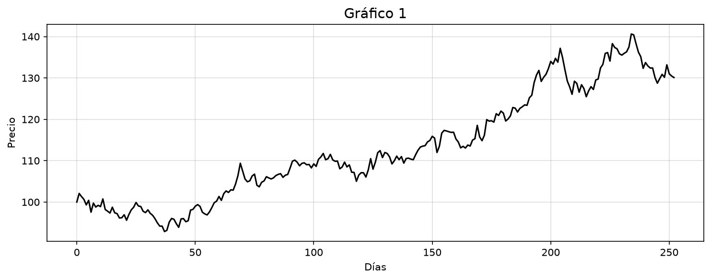
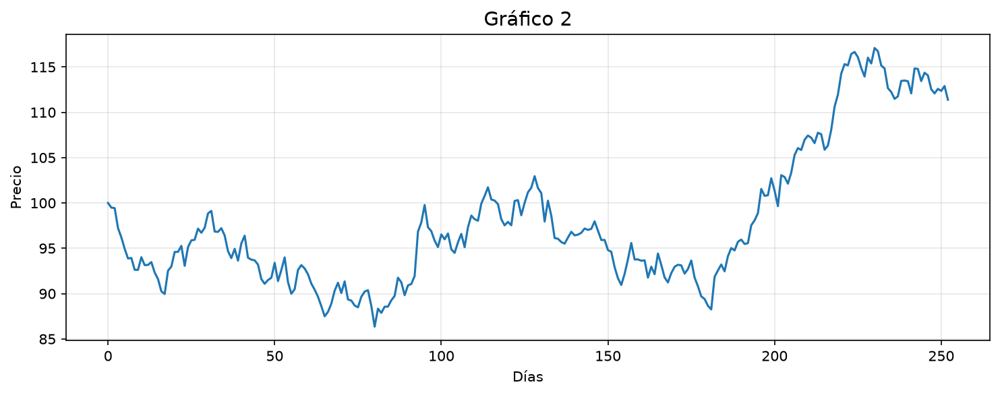
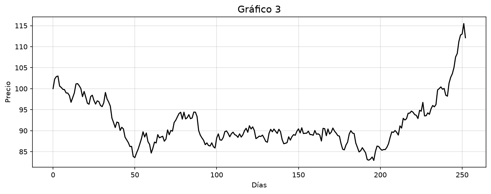
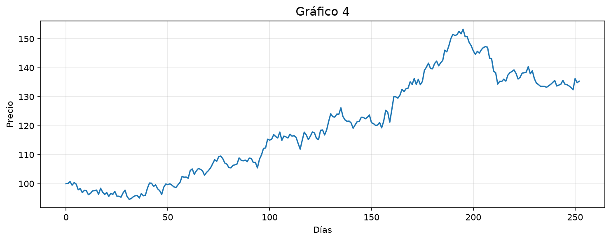
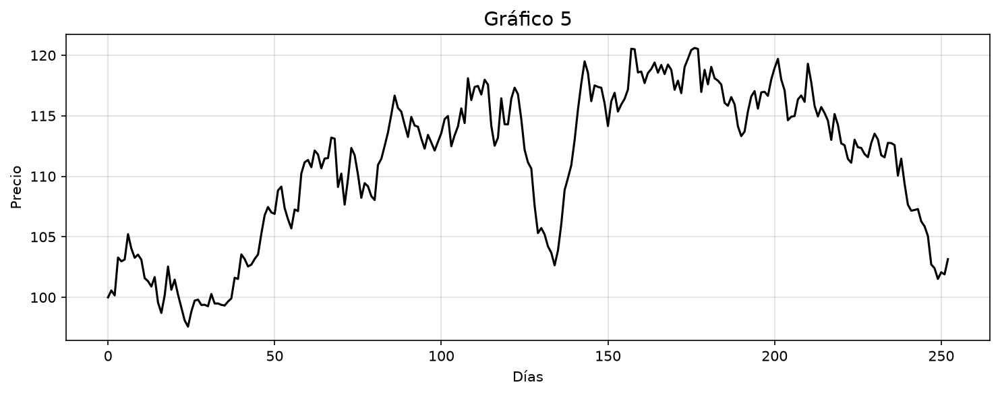
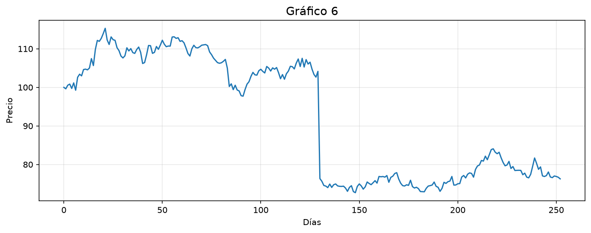
Cartas del juego (17 de difusión, 3 de salto):
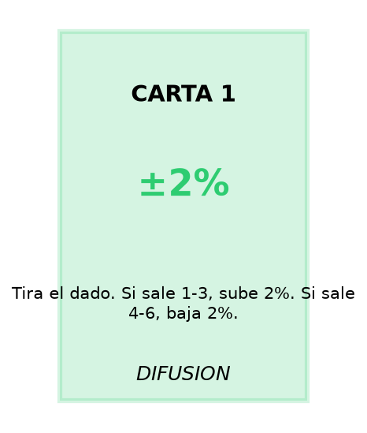
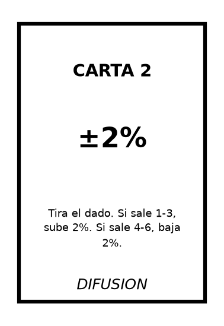
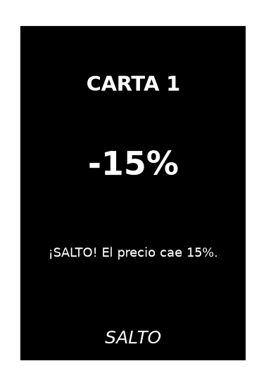
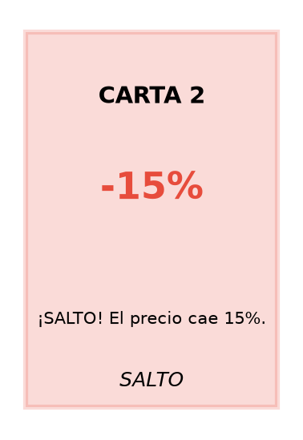
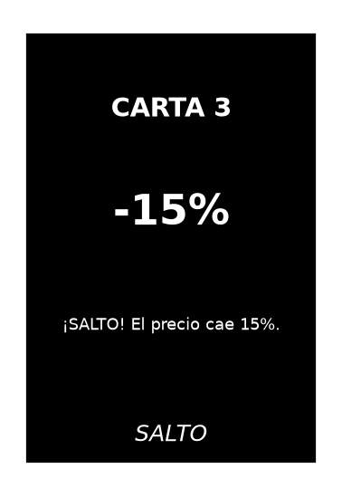
Referencias
- Merton, R. C. (1976). Option pricing when underlying stock returns are discontinuous. Journal of Financial Economics, 3(1-2), 125-144. doi:10.1016/0304-405X(76)90022-2
- Wirth, J., et al. (2025). Far transfer of metacognitive regulation. Educational Psychology Review.
- Gobet, F., & Sala, G. (2023). Cognitive training: A field in search of a phenomenon. Perspectives on Psychological Science.
- Kolb, D. A. (1984). Experiential Learning: Experience as the Source of Learning and Development.
- Modelo 3D de debriefing: Defusing, Discovering, Deepening.